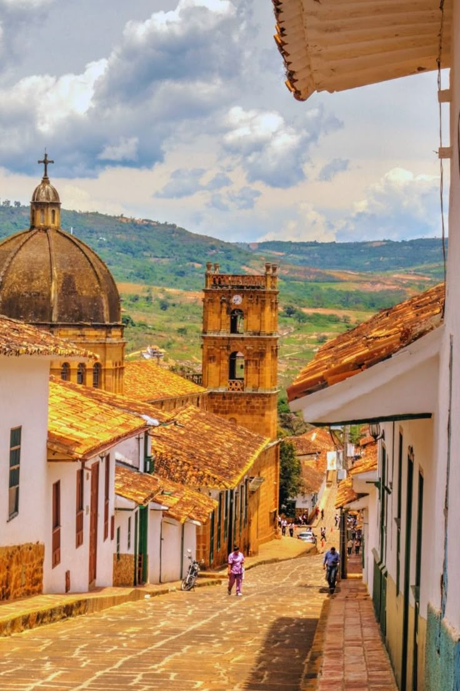
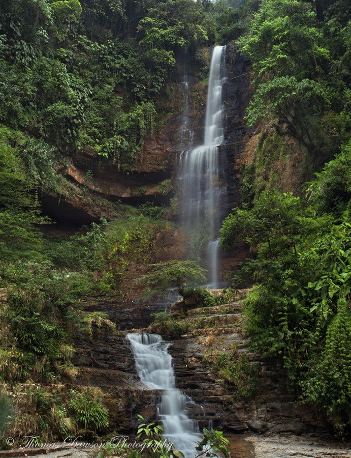

Descubre Santander
Santander es un destino turístico de aventura y naturaleza en Colombia. Entre sus atractivos destacan el Cañón del Chicamocha, San Gil como capital del turismo extremo, y pueblos coloniales como Barichara y Girón.
En A&G TOURS ofrecemos transporte turístico en Santander, permitiendo recorrer cómodamente cada rincón del departamento, desde Bucaramanga hasta los paisajes montañosos y cañones de gran belleza.
Nuestra misión es facilitar un turismo en Santander confiable, que conecte la cultura, la historia y la aventura con traslados seguros, confortables y oportunos.
Parque Nacional del Chicamocha
El Parque Nacional del Chicamocha (PANACHI) es uno de los atractivos turísticos más importantes de Santander. Ubicado en el majestuoso Cañón del Chicamocha, ofrece actividades de aventura como parapente, teleférico, deportes extremos y miradores con paisajes impresionantes que muestran la grandeza de la naturaleza colombiana.


Hormiga Culona
La Hormiga Culona es un símbolo de la cultura santandereana. Además de ser un alimento típico de la región, en Bucaramanga se ha levantado una escultura gigante en su honor, representando la tradición, la gastronomía y el orgullo de sus habitantes.
Barichara, pueblo colonial
Conocido como el pueblo más bonito de Colombia, Barichara encanta por sus calles empedradas, casas blancas con techos de barro y una atmósfera colonial que transporta al pasado. Es un destino ideal para el turismo cultural y fotográfico.
San Gil, aventura extrema
Reconocida como la capital del turismo de aventura en Colombia, San Gil ofrece actividades como rafting en el río Fonce, parapente, espeleología y torrentismo, siendo el lugar perfecto para los amantes de la adrenalina.
Cascada de Juan Curí
La Cascada de Juan Curí es una caída de agua de más de 200 metros rodeada de naturaleza exuberante. Los visitantes pueden hacer senderismo y disfrutar de un refrescante baño en sus pozos naturales, una experiencia única en Santander.
Zapatoca, ciudad del clima de seda
Zapatoca es un encantador municipio rodeado de montañas y cañones, famoso por su clima agradable y su arquitectura colonial. Es un destino perfecto para el descanso, las caminatas ecológicas y para conocer la historia del científico Caldas, quien vivió allí.
¡Contáctanos!